Gerechten 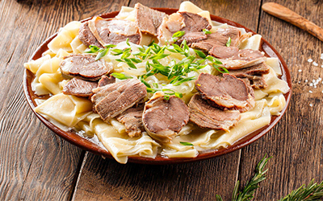 Beshbarmak 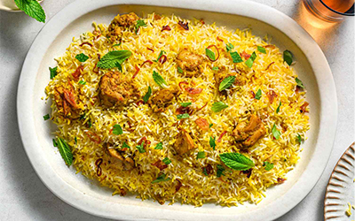 Biryani 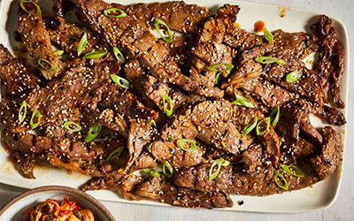 Bulgogi 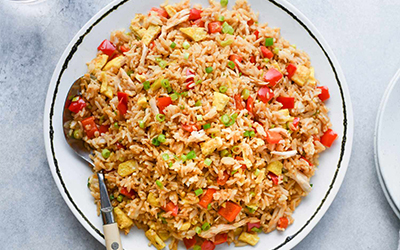 Chao fan 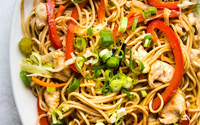 Chow mein 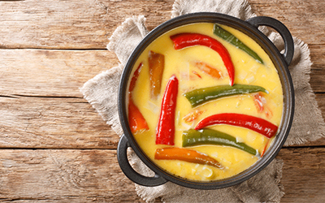 Datshi 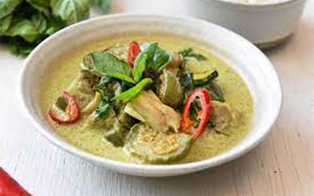 Gaeng keow wan 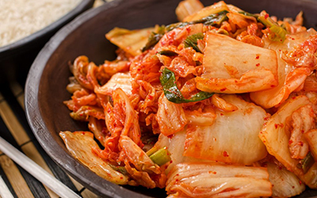 Kimchi 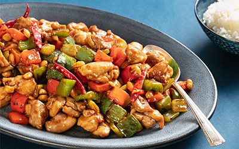 Kung pao 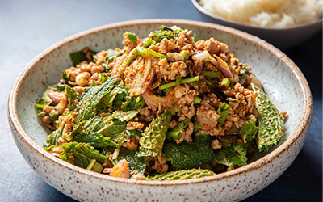 Laab 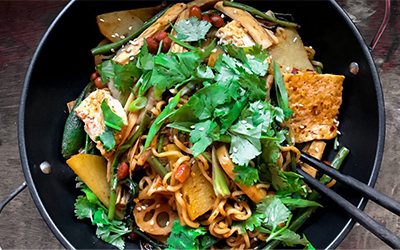 Mala xiang quo 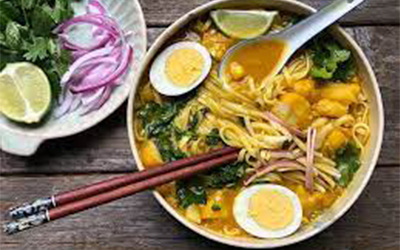 Mohinga 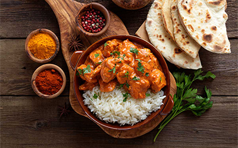 Murgh Makhani 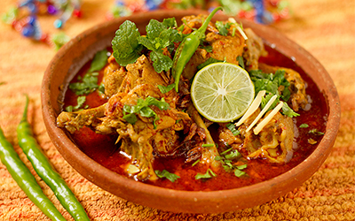 Nihari 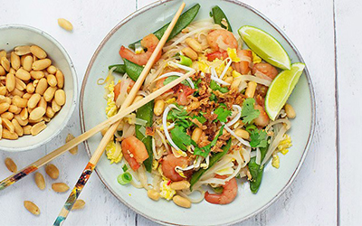 Pad Thai 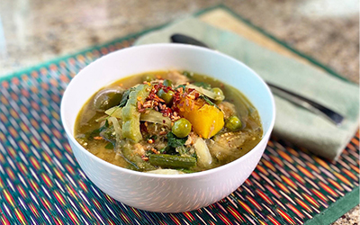 Samlar Kako 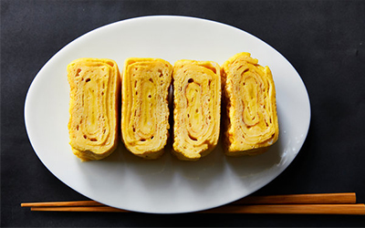 Tamagoyaki 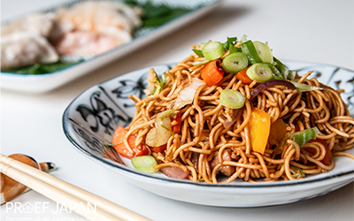 Yakisoba